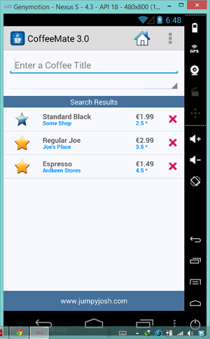
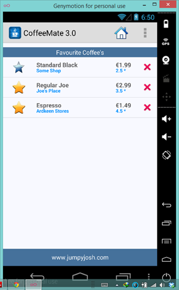

If you recall in CoffeeMate 2.0 we used a Fragment to display our list of coffees inside our Home Screen. A Fragments main purpose is to be reused so we can use our existing Fragment in both our Search & Favourites Screens.
The first thing we'll do is add the Fragment to our Search.java and Favourites.java Activity classes. This is pretty staright forward as we have already done this in our Home.java in CoffeeMate 2.0.
@Override
protected void onResume() {
super.onResume();
coffeeFragment = new CoffeeFragment();
getFragmentManager().beginTransaction()
.add(R.id.fragment_layout, coffeeFragment).commit();
}You can literally cut & paste the above code into both activity classes and run the app, so see what you get?
You should be seeing something like the following :
 
Obviously, our Favourites isn't filtered to show just 'Favourite Coffees' (we'll get to that later), but this does really illustrate the benefits of using Fragments when we can.
The next step is introducing the Filter so the user can view their Favourite Coffees (and eventually search).